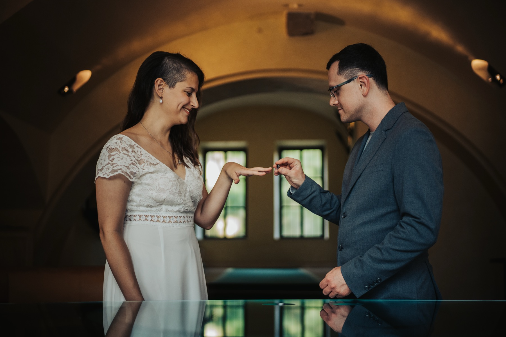
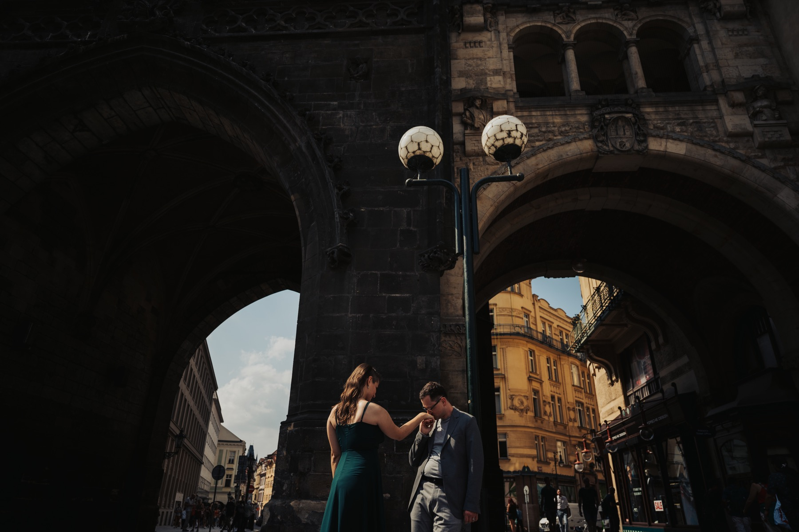
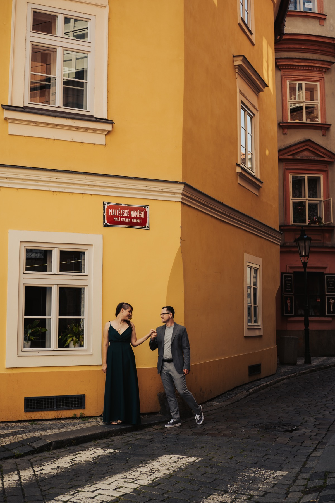
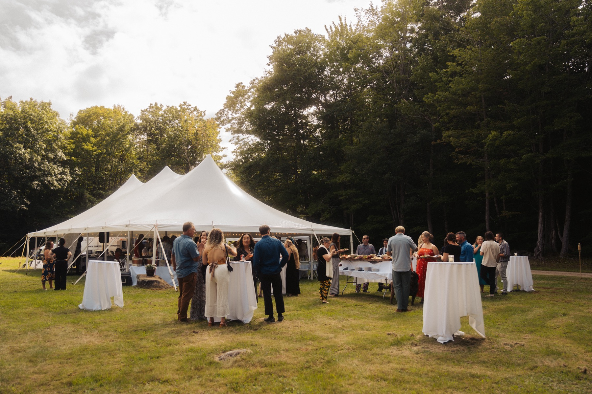
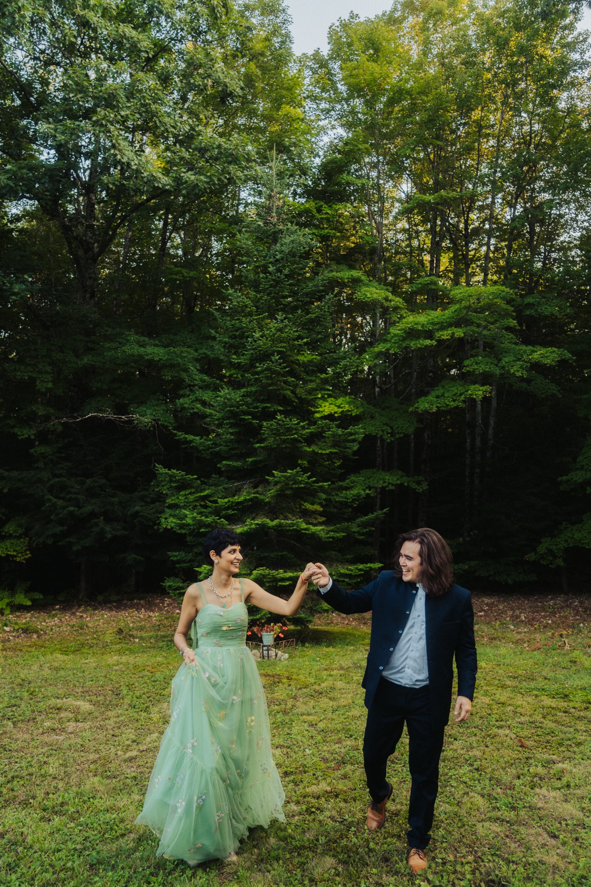
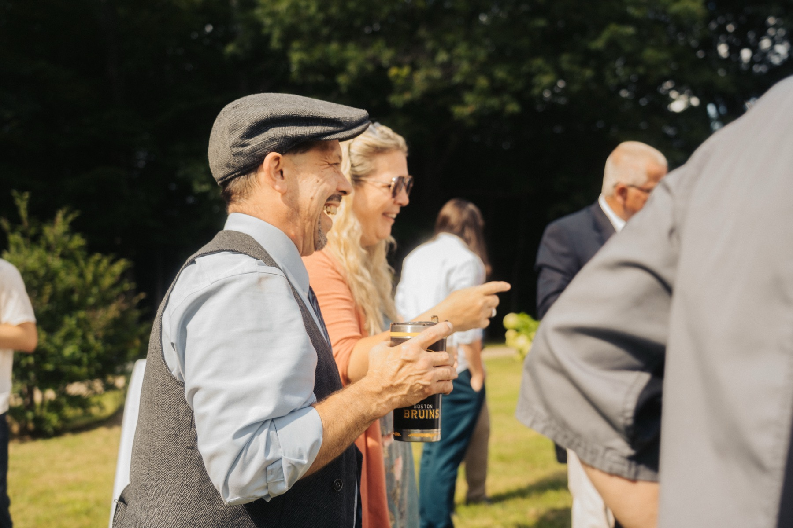
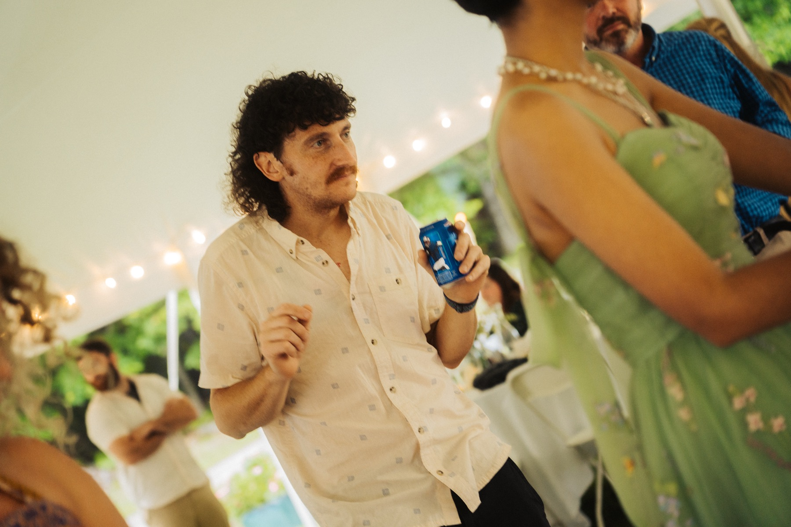
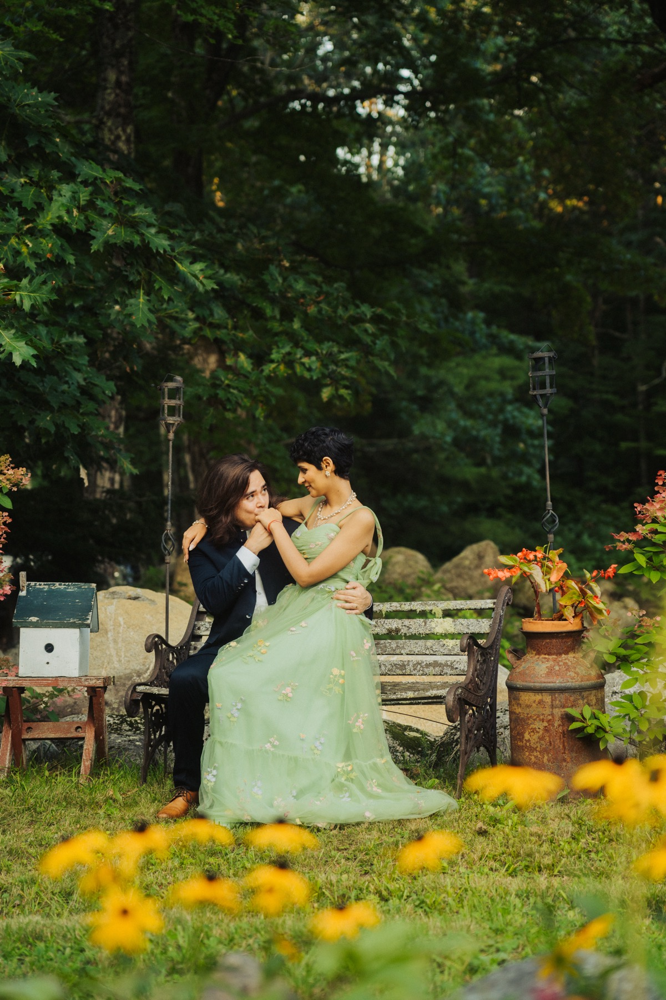
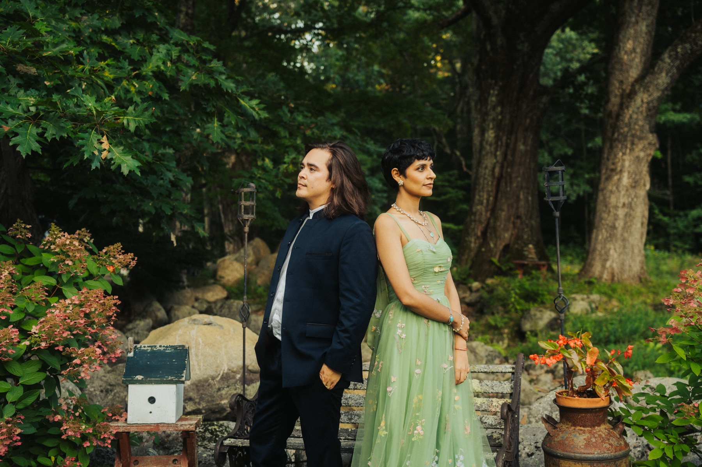

Weddings
Motion — cinematic, documentary wedding films. Photography — documentary wedding photography. Selection and specialization, not an archive of every wedding I've shot.
Three cinematic wedding films — each a complete, unified project.
This is the same principle behind every wedding I shoot, film or photograph: reportage first, minimal intervention, no recreating a moment that already happened. I'd rather move quietly through a room than direct it — reading the light, the architecture and the people already there, staying close enough to catch what's real without becoming the reason people start performing for the camera.
That has to flex depending on what's actually in front of me: an intimate family wedding under a tent asks for something different than a three-day destination production with international guests and a schedule built around a wedding planner. Different languages, different customs, different scale — the discipline stays constant, the execution adapts.
Working in Italian, English and Spanish means I can run a briefing directly with the couple and their planner without losing anything to translation, which matters more than it sounds on a multi-day destination production with vendors, family and guests from different countries. Photography and film are related but distinct disciplines in how I use them — stills hold a single decisive moment, film carries the sequence and sound of how the day actually moved — and on a wedding that books both, I'm reading the same room for two different outcomes at once, not shooting one and treating the other as a byproduct.
A curated selection, not a full archive — documentary, intimate, attentive to people, environment and light.









Josh & Julie — selected wedding photography, Prague, 2022. A civil ceremony and city portraits, part of a small selection of weddings shot outside Sicily.
Noah & Jessie — a compact documentary project, Boston, August 2023. A short, intimate family wedding under a tent at the edge of the forest, photographed over about two hours, mostly candid with a small number of posed portraits at the couple's request.
For couples looking for a film, photographs, or both — that feel lived, natural and unmistakably their own.
Start a project